Componente 3 Cuántos y quienes somos
Introducción
Esta Unidad identifica los elementos esenciales de la demografía, describe sus principales indicadores demográficos y examina la ecuación compensadora.
En el caso de Bogotá, las proyecciones demográficas más recientes indican que la ciudad se encuentra en una fase avanzada de la transición demográfica. Luego de décadas de crecimiento sostenido, la población total comenzará a estabilizarse y posteriormente a disminuir, como resultado de la caída en la fecundidad, el aumento de la esperanza de vida y la desaceleración de los flujos migratorios. Este cambio de tendencia convierte a Bogotá en un laboratorio urbano clave para analizar los efectos demográficos sobre la planeación territorial, el hábitat y la provisión de servicios públicos.
El análisis demográfico para Bogotá adquiere particular importancia a partir del año 2025, ya que la población total comenzará a disminuir. Esta tendencia es resultado de la llamada segunda transición demográfica, intensificada por la pandemia del COVID-19. En efecto, la reducción del número de nacimientos y el aumento de las defunciones, ante un saldo de migraciones casi nulo, han modificado los parámetros que se deben considerar al plantear el futuro de la ciudad.
Durante mucho tiempo se asumió que Bogotá crecería indefinidamente, aumentando así el consumo de recursos naturales y económicos, con efectos negativos para el ambiente y las finanzas del Distrito. El reciente cambio en esta tendencia, aunque con riesgos aún poco conocidos, también abre oportunidades que deben aprovecharse.
La disminución de la población infantil y juvenil reduce la necesidad de destinar recursos para su atención y formación. Sin embargo, el aumento de la población adulta exigirá mayores recursos para su cuidado. Es posible que el ahorro de gastos en el sector educativo sea suficiente para compensar este nuevo gasto.
El bono demográfico, que corresponde al período en el que la población activa supera ampliamente a la dependiente, podría finalizar en pocos años. Por ello, es esencial aprovechar al máximo el potencial de la actual fuerza laboral, mejorando su educación y atención en salud.
El tamaño de las familias ha disminuido y probablemente seguirá haciéndolo en el futuro. Serán necesarias nuevas políticas públicas para fomentar formas de habitar más sostenibles en Bogotá, mejorando la calidad de los servicios públicos domiciliarios y optimizando el uso del suelo urbano existente.
Este componente invita a reflexionar sobre las diversas posibilidades que ofrece el nuevo panorama demográfico, con el fin de transformar a Bogotá en una ciudad con mejor calidad de vida, a menor costo para las familias y para el fisco distrital.
Las definiciones, conceptos y políticas urbanas aquí presentadas son ejemplos para estimular la creatividad de quienes emprendan la tarea de imaginar la Bogotá que seremos. No se pretende agotar el muy amplio y denso catálogo de los componentes demográficos ni de las políticas de desarrollo urbano.
1.1. Elementos esenciales de la demografía
a. Volumen de la población: Número total de personas que integran una población en un momento determinado. Se obtiene principalmente de los censos y los registros administrativos (estado civil, empadronamiento, salud), o en forma indirecta mediante las estimaciones basadas en el análisis de tendencias como la natalidad, la mortalidad y las migraciones.
b. Estructura de la población: Distribución de la población según edad, sexo, nivel de pobreza, tipo de vivienda, empleo, entre otros factores.
c. Distribución espacial: Ubicación de la población en determinadas zonas geográficas. Incluye análisis de georreferenciación y dispersión poblacional.
d. Evolución o dinámica poblacional: Cambios en la dimensión y estructura poblacional a lo largo del tiempo, medidos por diferentes indicadores como la natalidad (nacimientos), mortalidad (defunciones) y migración (emigración e inmigración).
1.2. Principales indicadores demográficos y datos de Bogotá
a. Tasa de natalidad: Número de nacimientos por cada 1.000 habitantes en un año.
En Bogotá, la tasa de natalidad ha presentado una disminución sostenida durante las últimas dos décadas, reflejando cambios profundos en los patrones reproductivos de la población. Factores como el aumento en el nivel educativo, especialmente de las mujeres, la postergación de la maternidad, el acceso a métodos anticonceptivos y las transformaciones en las formas de organización familiar han contribuido a este descenso.
La reducción de la natalidad tiene efectos directos sobre la estructura por edades de la población, el tamaño de los hogares y la demanda futura de servicios como educación inicial y básica. Al mismo tiempo, esta tendencia anticipa un proceso acelerado de envejecimiento poblacional, lo que plantea nuevos retos para la planificación urbana, la sostenibilidad de los sistemas de protección social y la provisión de servicios de salud y cuidado en la ciudad.
Gráfico 1. Tasa de natalidad Bogotá 1928-2028
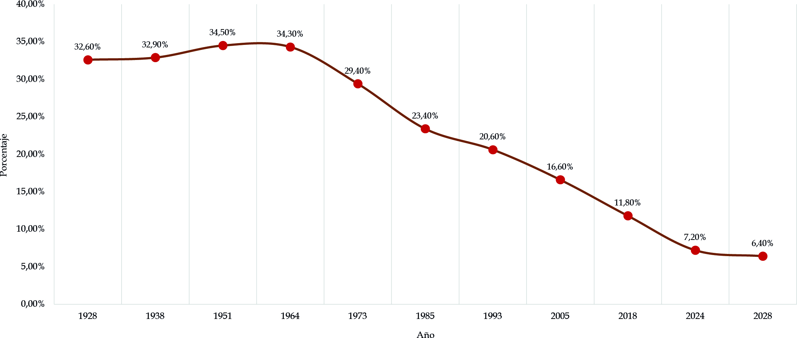
Fuente: Elaboración Sociedad de Mejoras y Ornato de Bogotá con base en DANE; Cálculos SMOBb. Tasa de mortalidad: Número de fallecimientos por cada 1.000 habitantes en un año.
En Bogotá, la tasa de mortalidad ha mostrado variaciones asociadas tanto al envejecimiento progresivo de la población como a eventos coyunturales que han impactado la salud pública. El aumento en la proporción de personas adultas mayores ha incrementado la incidencia de enfermedades crónicas y degenerativas, lo que tiende a elevar gradualmente la tasa de mortalidad general.
Adicionalmente, la pandemia del COVID-19 produjo un incremento excepcional de la mortalidad, evidenciando la vulnerabilidad del sistema urbano frente a crisis sanitarias y la importancia de contar con sistemas de salud robustos y capacidad de respuesta oportuna. En el mediano y largo plazo, la evolución de la tasa de mortalidad en Bogotá estará estrechamente vinculada a la calidad de los servicios de salud, las condiciones de vida, el acceso a la prevención y los hábitos de la población.
Gráfico 2. Tasa de mortalidad Bogotá 1928-2028
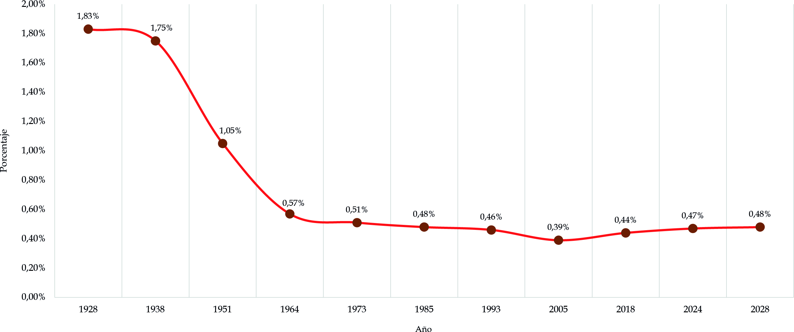
Fuente: Elaboración Sociedad de Mejoras y Ornato de Bogotá con base en DANE; Cálculos SMOBc. Crecimiento poblacional: Diferencia entre la natalidad y la mortalidad, considerando la migración.
En Bogotá, el crecimiento poblacional ha experimentado una desaceleración progresiva como resultado de la reducción sostenida de la natalidad, el aumento de la mortalidad asociado al envejecimiento poblacional y la estabilización de los flujos migratorios. Este comportamiento marca un punto de inflexión en la historia demográfica de la ciudad, que durante décadas estuvo caracterizada por un crecimiento continuo.
La consideración del componente migratorio resulta clave para comprender esta dinámica. Si bien Bogotá ha sido tradicionalmente un polo de atracción para población proveniente de otras regiones del país y del exterior, en los últimos años los saldos migratorios tienden a ser más moderados. La combinación de crecimiento natural bajo y migración neta reducida explica la transición hacia un escenario de estancamiento e incluso de posible disminución poblacional, con implicaciones directas para la planeación urbana, la vivienda y la provisión de servicios públicos.
Gráfico 3. Tasa de natalidad, mortalidad, migración y crecimiento de Bogotá 1928-2028
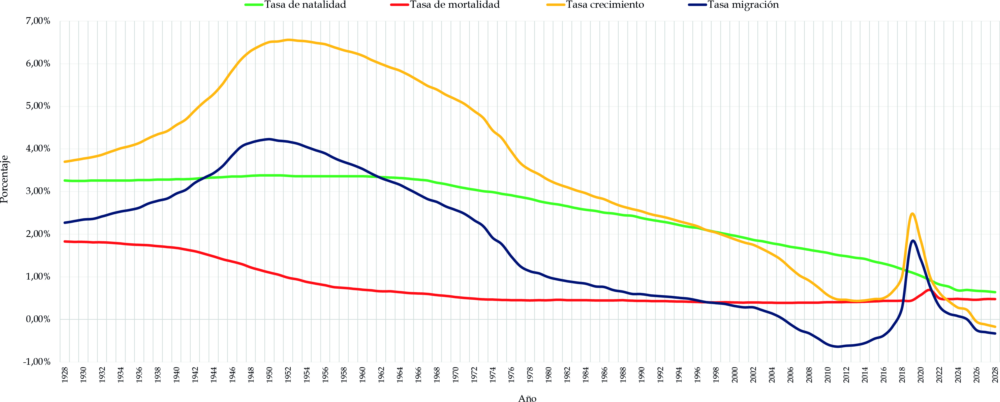
Fuente: Elaboración Sociedad de Mejoras y Ornato de Bogotá con base en DANE; Cálculos SMOBd. Esperanza de vida: Promedio de años que se espera que vivan una persona desde su nacimiento.
En Bogotá, la esperanza de vida ha aumentado de manera sostenida como resultado de mejoras en las condiciones de salud pública, el acceso a servicios médicos, la ampliación de la cobertura en saneamiento básico y los avances en prevención y atención de enfermedades. Este indicador refleja no solo la supervivencia de la población, sino también la calidad de vida alcanzada en el contexto urbano.
El incremento de la esperanza de vida tiene efectos directos sobre la estructura demográfica, ya que amplía la proporción de personas adultas y adultas mayores en la población total. Este proceso plantea desafíos importantes para la ciudad en términos de sostenibilidad de los sistemas de salud y pensiones, así como en la necesidad de adaptar el entorno urbano, la vivienda y los servicios a una población que vive más años y requiere condiciones adecuadas para un envejecimiento digno y activo.
Gráfico 4. Esperanza de vida al nacer, Bogotá 1928-2028
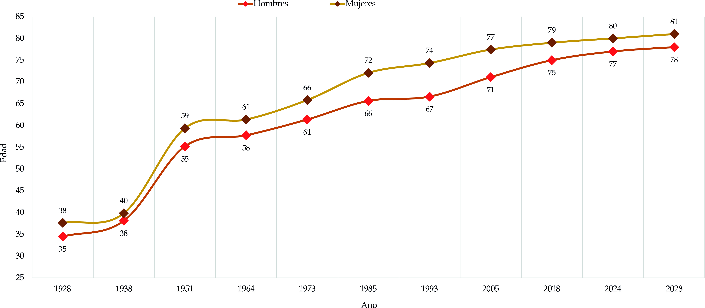
Fuente: Elaboración Sociedad de Mejoras y Ornato de Bogotá con base en DANE; Cálculos SMOBe. Tasa de fecundidad: Número promedio de hijos por mujer en su vida fértil.
En Bogotá, la tasa de fecundidad ha descendido de manera sostenida hasta ubicarse por debajo del nivel de reemplazo generacional. Este comportamiento refleja cambios estructurales en las decisiones reproductivas de las mujeres y los hogares, asociados al aumento de los niveles educativos, la mayor participación femenina en el mercado laboral, el acceso a métodos anticonceptivos y la postergación de la maternidad.
La disminución de la fecundidad tiene implicaciones profundas sobre el crecimiento poblacional, la estructura por edades y el tamaño de los hogares. A largo plazo, este proceso acelera el envejecimiento de la población y redefine las demandas sobre el sistema educativo, el mercado laboral y los sistemas de protección social. En el contexto urbano de Bogotá, estos cambios obligan a replantear las políticas de vivienda, cuidado y bienestar, adaptándolas a hogares más pequeños y diversos.
La evolución de la tasa de fecundidad constituye uno de los determinantes más importantes del futuro demográfico de Bogotá y de la sostenibilidad de su modelo urbano.
Gráfico 5. Tasa de fecundidad de Bogotá 2005-2026
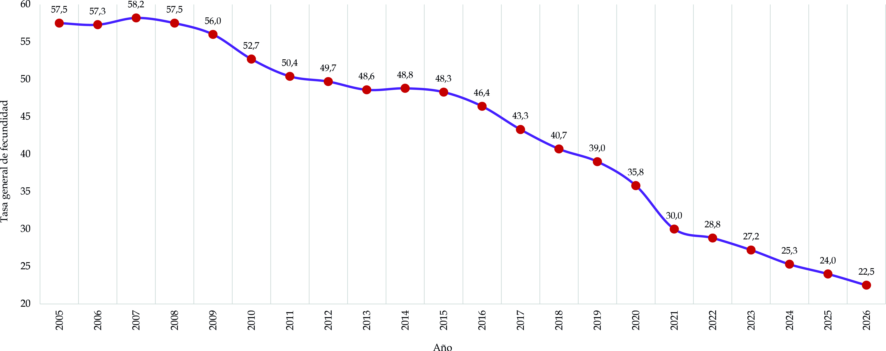
Fuente: Elaboración Sociedad de Mejoras y Ornato de Bogotá con base en DANE; Cálculos SMOBf. Migración neta: Diferencia entre inmigración (llegada de personas) y emigración (salida de personas) en un territorio.
En Bogotá, la migración neta ha sido históricamente un componente determinante del crecimiento poblacional, dado su papel como principal centro económico, administrativo y educativo del país. Durante décadas, la ciudad recibió flujos constantes de población provenientes de otras regiones de Colombia, así como de población migrante internacional, lo que contribuyó de manera significativa a su expansión demográfica.
En los últimos años, sin embargo, los saldos migratorios tienden a mostrar una mayor estabilidad e incluso una reducción relativa. Factores como la consolidación de otras ciudades intermedias, las dinámicas del mercado laboral, el costo de vida urbano y los efectos de la pandemia han modificado los patrones migratorios.
Gráfico 6. Tasa de migración de Bogotá 1928-2028
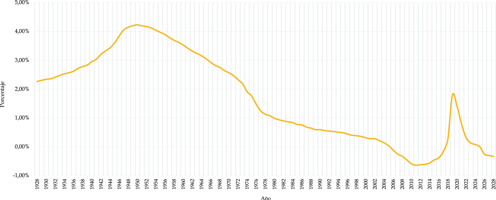
Fuente: Elaboración Sociedad de Mejoras y Ornato de Bogotá con base en DANE; Cálculos SMOBg. Densidad poblacional: Número de habitantes por kilómetro cuadrado; refleja la concentración de población en un área determinada.
En Bogotá, la densidad poblacional es uno de los rasgos más significativos de su configuración urbana, resultado de un crecimiento acelerado y concentrado a lo largo del siglo XX. La elevada concentración de habitantes por kilómetro cuadrado ha generado presiones sobre el suelo urbano, la infraestructura, el espacio público y los servicios, influyendo directamente en la calidad de vida de la población.
No obstante, la densidad no se distribuye de manera homogénea en el territorio. Existen marcadas diferencias entre localidades, asociadas a la localización de actividades económicas, la disponibilidad de vivienda, las condiciones socioeconómicas y los patrones históricos de ocupación del suelo. En el actual contexto de desaceleración del crecimiento poblacional, la densidad se convierte en un indicador clave para orientar estrategias de renovación urbana, reutilización del suelo existente y optimización de la infraestructura, más que para promover nuevas expansiones urbanas.
Gráfico 7. Densidad poblacional por localidad 2018-2024-2026
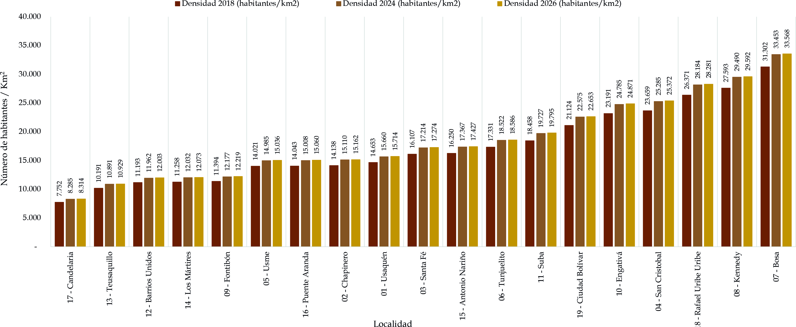
Fuente: Elaboración Sociedad de Mejoras y Ornato de Bogotá con base en DANE; Cálculos SMOBh. Estructura por edad y sexo: Distribución de la población según grupos de edad y género, útil para identificar tendencias y necesidades sociales.
En Bogotá, la estructura por edad y sexo evidencia transformaciones demográficas que tienen impactos directos en la organización social, económica y territorial de la ciudad. La reducción de la población infantil y juvenil, junto con el aumento progresivo de la población adulta y adulta mayor, refleja el avance de la transición demográfica y condiciona las necesidades de servicios en cada etapa del ciclo de vida.
Desde la perspectiva de género, aunque la distribución entre hombres y mujeres es relativamente equilibrada en el conjunto de la población, se presentan diferencias significativas por grupos de edad. En edades avanzadas, la mayor supervivencia femenina incrementa la proporción de mujeres, lo que plantea desafíos específicos en materia de salud, cuidado, vivienda y protección social. El análisis conjunto de edad y sexo permite anticipar demandas diferenciadas y diseñar políticas públicas más equitativas y ajustadas a la realidad demográfica de Bogotá.
Pirámide 1. Comparación distribución por edad y sexo de Bogotá 1928-2028
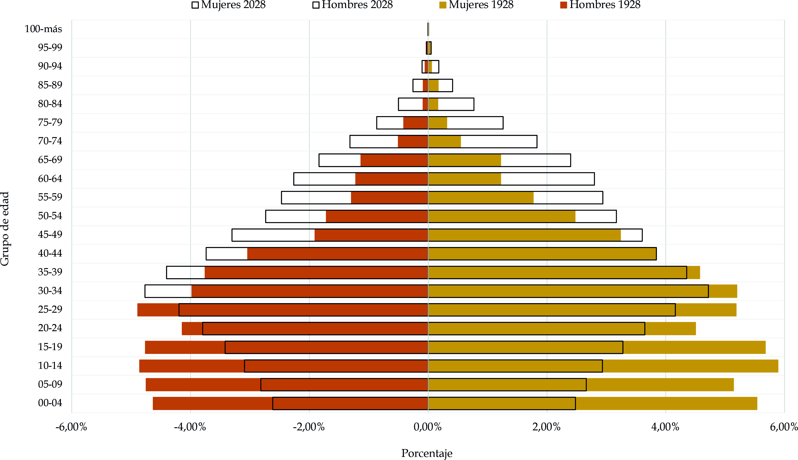
Fuente: Elaboración Sociedad de Mejoras y Ornato de Bogotá con base en DANE 1928 - 2028i. Índice de masculinidad: Número de hombres por cada 100 mujeres al nacer o en cada grupo de edad de una población, cuya variación en el tiempo es muy baja (excepto casos excepcionales como una guerra, migraciones selectivas, etc.). Se usa para evaluar la calidad de los datos censales.
En el caso de Bogotá, el índice de masculinidad presenta valores relativamente estables, coherentes con los patrones demográficos observados a nivel nacional e internacional. Al nacer, se registra una ligera predominancia masculina, mientras que en edades avanzadas la proporción de mujeres tiende a ser mayor, como resultado de su mayor esperanza de vida.
Este indicador resulta especialmente útil para evaluar la consistencia y calidad de los datos censales y de las proyecciones poblacionales. Variaciones significativas o atípicas en el índice de masculinidad pueden señalar errores de registro o fenómenos excepcionales como migraciones selectivas por sexo. En el contexto urbano de Bogotá, su análisis complementa el estudio de la estructura por edad y sexo y contribuye a una lectura más precisa de las dinámicas poblacionales.
Gráfico 8. Índice de masculinidad Bogotá 1928-2028
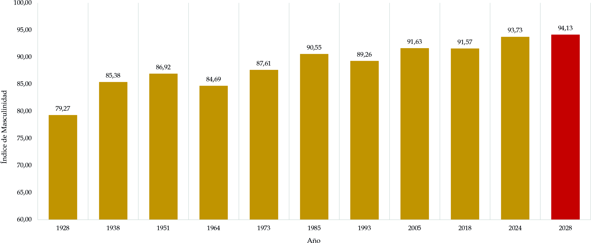
Fuente: Elaboración Sociedad de Mejoras y Ornato de Bogotá con base en DANE; Cálculos SMOBj. Edad mediana: Es un indicador del envejecimiento poblacional que divide a la población en dos grupos iguales según la edad. Permite analizar si una sociedad tiene una población mayoritariamente joven o envejecida.
En Bogotá, la edad mediana ha aumentado de manera sostenida en las últimas décadas, reflejando el avance del proceso de envejecimiento poblacional. Este incremento indica que una proporción cada vez mayor de la población se concentra en edades adultas y adultas mayores, mientras disminuye el peso relativo de los grupos más jóvenes.
El aumento de la edad mediana constituye una señal sintética de los cambios estructurales en la población y resulta especialmente útil para comparar la dinámica demográfica entre distintos períodos y territorios. En términos de planeación urbana y social, una edad mediana más alta implica ajustes en la provisión de servicios, el mercado laboral, la demanda de vivienda y los sistemas de salud y cuidado, aspectos centrales para el futuro de Bogotá.
Gráfico 9. Edad mediana Bogotá 1928-2028
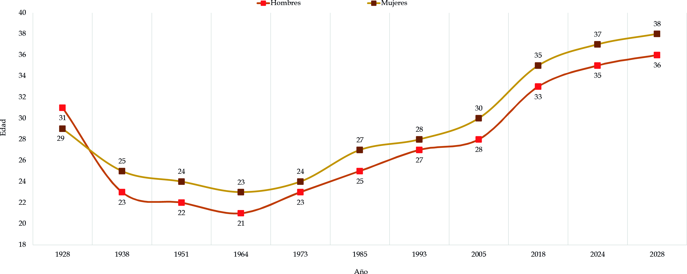
Fuente: Elaboración Sociedad de Mejoras y Ornato de Bogotá con base en DANE; Cálculos SMOBk. Etapas vitales: Se clasifica en tres categorías: i) menores de 15 años; ii) población activa entre los 15 y 60 años y iii) adultos mayores (más de 60), lo cual evidencia la intensidad y la velocidad con que se produce el cambio de comportamiento de los parámetros demográficos.
Por ejemplo, en Bogotá la distribución de la población por etapas vitales evidencia transformaciones significativas en la composición demográfica de la ciudad. La disminución relativa de la población infantil y juvenil, junto con el aumento de la población en edades adultas y adultas mayores, refleja los efectos combinados de la reducción de la fecundidad y el aumento de la esperanza de vida.
El análisis por etapas vitales permite identificar con mayor claridad las necesidades específicas de cada grupo poblacional. Mientras los menores de 15 años demandan servicios educativos, de nutrición y cuidado, la población en edad activa requiere oportunidades de empleo, formación y acceso a vivienda, y las personas mayores demandan servicios de salud, cuidado y protección social. En el contexto de Bogotá, este enfoque resulta fundamental para orientar la asignación eficiente de recursos y la formulación de políticas públicas diferenciadas.
Gráfico 10. Etapas vitales Bogotá 1928-2028
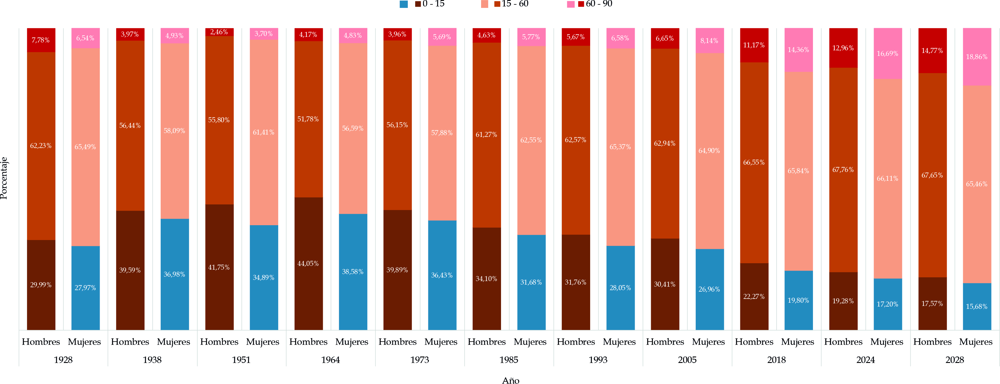
Fuente: Elaboración Sociedad de Mejoras y Ornato de Bogotá con base en DANE 1938-2028; Cálculos SMOBl. Índice de dependencia: Relación entre la población considerada como dependiente y la que se define como económicamente productiva o “potencialmente activa” (15 a 60 años). Permite medir cuántas personas dependen económicamente de las “potencialmente trabajadoras” o que se encuentran en edad de trabajar. Se expresa como el número de personas dependientes por cada 100 personas en edad de trabajar.
En Bogotá, el índice de masculinidad se mantiene dentro de rangos relativamente estables, con una ligera predominancia masculina al nacer y una mayor proporción de mujeres en los grupos de edad más avanzados, como resultado de su mayor esperanza de vida. Estas variaciones por edad responden a patrones demográficos esperados y permiten caracterizar la estructura poblacional de la ciudad.
Este indicador cumple además una función técnica relevante, ya que se utiliza para evaluar la calidad y consistencia de los datos censales y de las proyecciones demográficas. Cambios significativos o comportamientos atípicos en el índice de masculinidad pueden alertar sobre errores de registro o sobre la incidencia de fenómenos excepcionales, como migraciones selectivas por sexo, que influyen en la composición de la población.
Gráfico 11. Índice de dependencia Bogotá 1928-2028
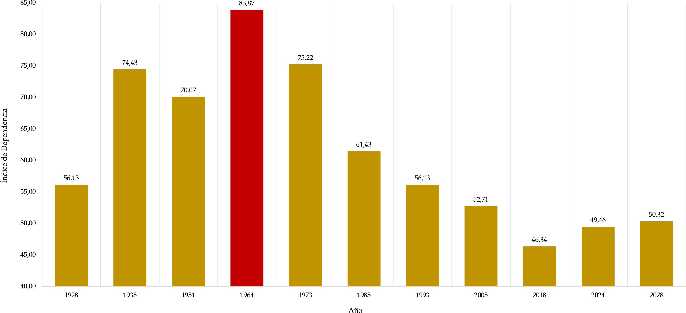
Fuente: Elaboración Sociedad de Mejoras y Ornato de Bogotá con base en DANE; Cálculos SMOBEn Bogotá, estos indicadores reflejan transformaciones profundas en la estructura poblacional. La tasa global de fecundidad se ha reducido de manera sostenida, situándose por debajo del nivel de reemplazo, mientras que la esperanza de vida ha aumentado de forma significativa. La densidad poblacional urbana, una de las más altas del país, evidencia una presión histórica sobre el suelo y los servicios, aunque esta presión tenderá a modificarse ante la desaceleración del crecimiento poblacional.
1.3. Ecuación compensadora
Es una fórmula demográfica que permite calcular la población total en un momento determinado, considerando nacimientos, defunciones, inmigraciones y emigraciones, y se expresa de la siguiente manera:
![]()
Esta ecuación evalúa tanto el crecimiento vegetativo como el saldo migratorio. Los métodos para proyectar la población incluyen:
a. Métodos matemáticos: Se emplean modelos o algoritmos donde el crecimiento se basa en diferentes hipótesis de variación: aritméticas, geométricas y logarítmicas.
b. Tablas de vida: Consideran tasas de natalidad, mortalidad y migración por área geográfica. Luego se pueden agregar para obtener un total.
c. Proyecciones basadas en censos: Se utilizan datos históricos de censos poblacionales para realizar estimaciones futuras, ajustando variables como migración y crecimiento natural.
d. Método de los componentes de cohorte: Es el método estándar para proyecciones detalladas. Consiste en proyectar cada cohorte de edad aplicando tasas específicas de fecundidad, mortalidad y migración. Permite estimar la composición futura de la población.
e. Modelos matemáticos avanzados: Como los modelos logísticos o de Gompertz, ajustan curvas matemáticas a los datos históricos para prever el comportamiento futuro de la población.
Tabla 1. Métodos de la ecuación compensadora
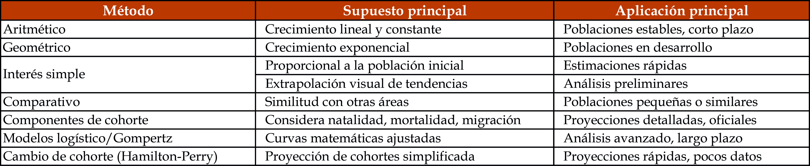
Fuente: Elaboración Ernesto Rojas Morales.En el caso de Bogotá, la ecuación compensadora permite comprender con mayor precisión la dinámica reciente de la población, al integrar el crecimiento natural y el comportamiento de la migración. Durante décadas, el crecimiento poblacional de la ciudad estuvo impulsado tanto por altos niveles de natalidad como por saldos migratorios positivos. Sin embargo, en la actualidad, la reducción de los nacimientos, el aumento de las defunciones asociadas al envejecimiento poblacional y la moderación de los flujos migratorios han modificado sustancialmente el resultado de esta ecuación.
La aplicación de la ecuación compensadora en el contexto urbano de Bogotá muestra que el crecimiento total tiende a desacelerarse e incluso a estabilizarse, lo que obliga a revisar los supuestos tradicionales de expansión continua de la población. Este enfoque resulta fundamental para la formulación de proyecciones demográficas realistas y para la toma de decisiones en materia de planeación territorial, vivienda y provisión de servicios públicos.
La ecuación compensadora sintetiza los principales procesos demográficos y constituye una herramienta clave para interpretar los cambios recientes en la población de Bogotá.
Gráfico 12. Ecuación compensadora de Bogotá 1928-2028
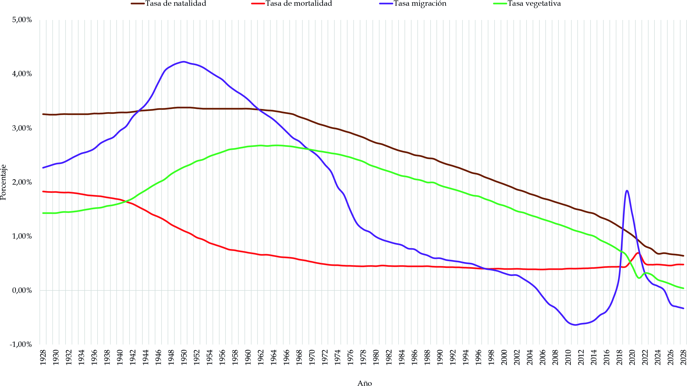
Fuente: Elaboración Sociedad de Mejoras y Ornato de Bogotá con base en DANE; Cálculos SMOBUnidad 3.2 La estructura demográfica Unidad 3.3 Indicadores demográficos Sección 4.2.1 El paisaje de Bogotá Sección 4.3.3 Evolución de la ocupación del territorio Sección 5.1.1 Sistema vial y de transporte Sección 5.1.2 Sistema de Servicios Públicos Sección 5.1.3 Sistema de espacio público Sección 5.2.1 Sistema de equipamientos Sección 5.2.2 Sistema de hábitat